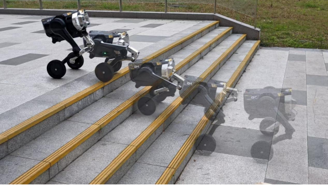
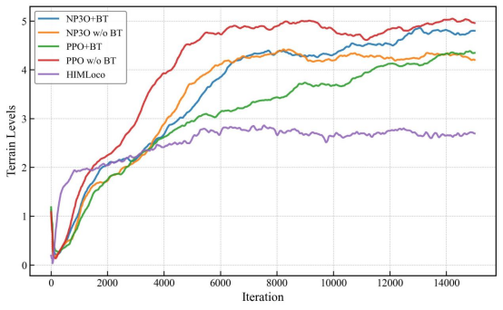
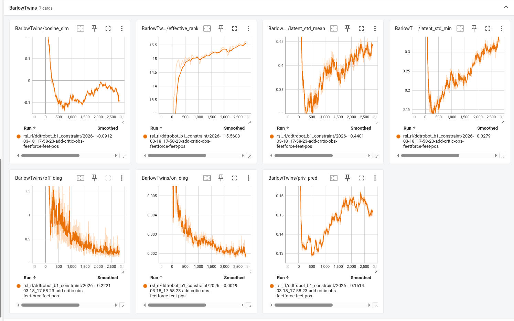
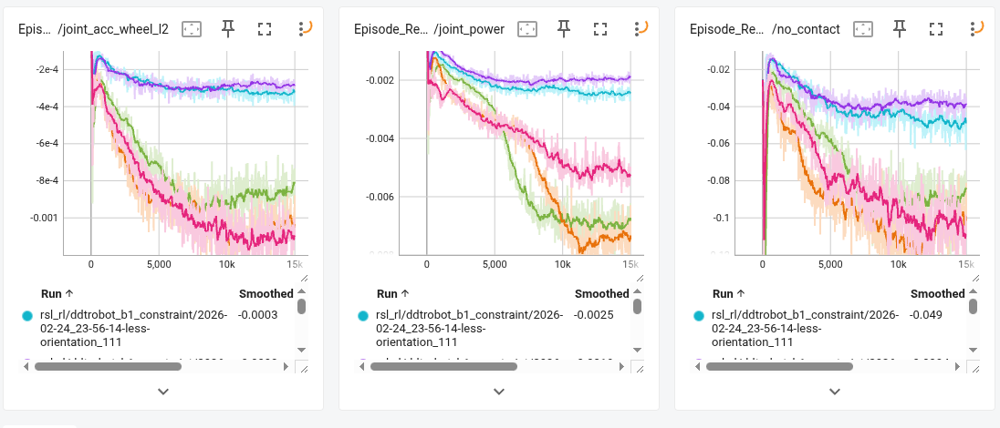
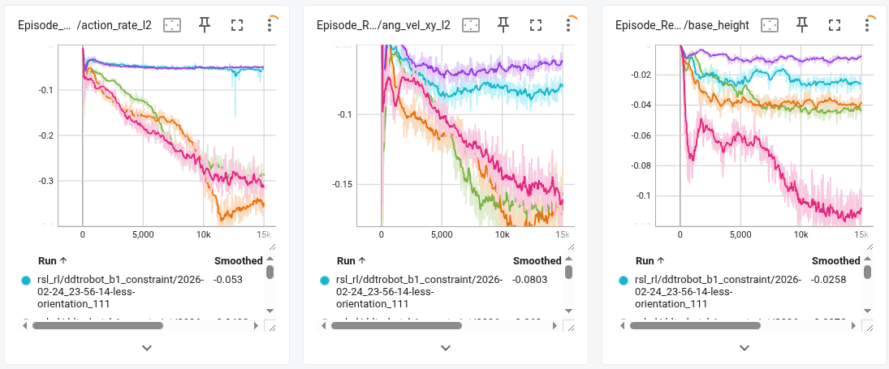
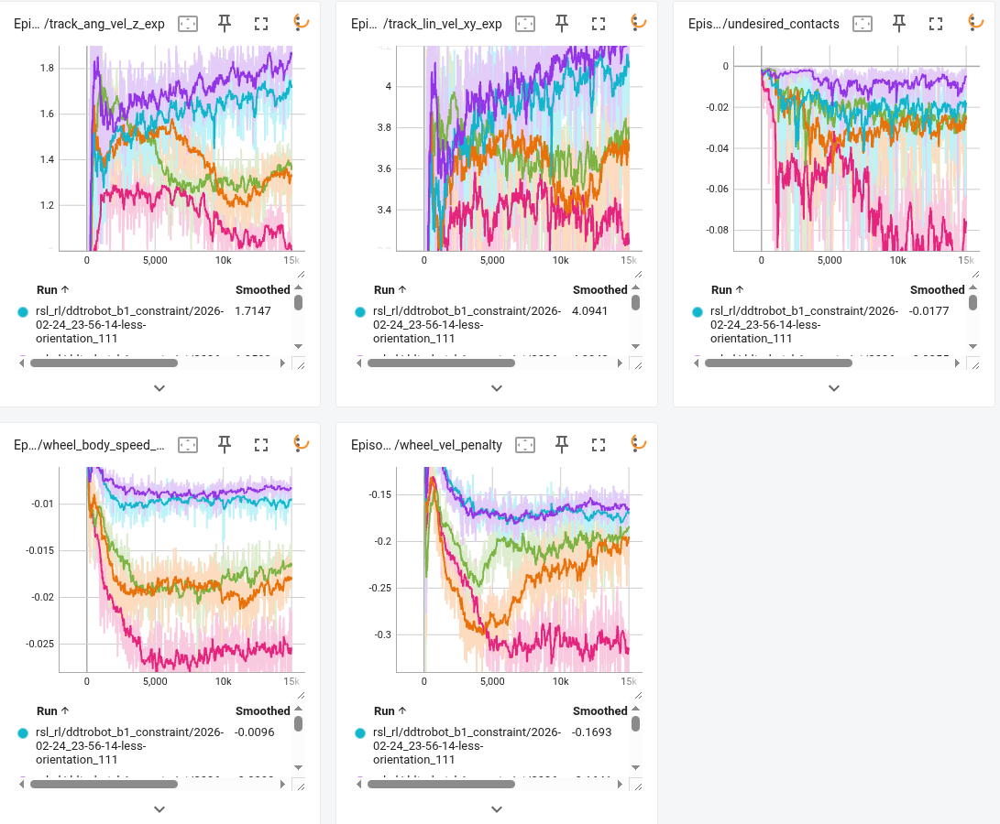

D1 双轮足机器人自主上楼梯项目
本项目面向双轮足机器人在真实楼梯场景中的自主运动控制问题，围绕复杂接触切换、强非线性动力学以及关节安全约束开展控制算法设计与实机部署。

项目简介
楼梯场景中的双轮足机器人控制具有显著挑战性：机器人需要在离散台阶结构中完成连续推进，同时在接触切换过程中保持机体稳定，并满足关节级安全约束。
实现真实场景下的稳定自主上楼梯
在 D1 双轮足机器人平台上完成楼梯场景中的自主运动控制，实现机器人在真实环境中的连续、平稳且可重复的上楼梯表现。
NP3O 约束强化学习控制
采用 NP3O 约束优化方法在策略训练中显式引入关节级安全硬约束，并结合非对称 Actor-Critic 结构与 Barlow Twins 自监督学习。
完整 Sim-to-Real 部署流程
从仿真环境构建、策略训练到实机部署与调试，完成了完整的 Sim-to-Real 闭环，实现策略在真实楼梯环境中的稳定迁移。
方法概述：项目采用基于 NP3O 的约束强化学习框架，将关节安全限制作为训练中的硬约束进行优化；在策略结构上，使用非对称 Actor-Critic，让 critic 利用训练阶段的特权信息提升价值估计质量，而 actor 仅依赖部署时可获得观测进行决策；同时引入 Barlow Twins 自监督学习增强状态表征能力，提升策略在复杂楼梯场景下的鲁棒性与泛化性能。
仿真视频
本部分展示策略在 Isaac Lab 中的上楼梯视频，用于说明训练环境中的任务形态和策略最终学到的运动效果。
Isaac Lab 中的上楼梯结果
视频记录的是策略在 Isaac Lab 训练环境中的上楼梯过程。可以直接看到机器人在连续台阶上的运动状态，包括起步、台阶切换和通过后的姿态变化。
Isaac Lab 仿真结果
最终训练策略在仿真中的执行效果，让读者先看到训练环境中的任务表现。
MuJoCo 仿真中的策略表现
该视频展示了策略在 MuJoCo 环境中的自主上楼梯效果。可以重点观察机器人在轮足协同、台阶接触切换和机体前向推进过程中的动作节奏。仿真阶段的目标不是只让机器人"上去"，而是学习一种能够在离散接触条件下保持平滑、可迁移的控制模式。
MuJoCo 仿真结果
展示了策略在 MuJoCo 物理仿真环境中的上楼梯表现，验证了控制策略在不同仿真平台间的迁移能力。
消融实验
本部分深入分析不同算法在地形通过能力、动作平滑性、约束满足度等多维度指标上的表现。重点解释为什么某些方法地形等级上升快但实际策略不可行，以及 NP3O+BT 如何在性能与可控性之间取得最佳平衡。
地形通过能力的算法对比分析
Terrain Level 曲线反映了策略在训练过程中能够成功通过的地形难度等级。从曲线可以观察到，我们的完整方法 NP3O+BT 在约 1500 次迭代后快速上升，最终稳定在高地形等级，明显优于 HIMLoco、PPO+Lag 和 NP3O（无 BT）等基线方法。值得注意的是，PPO 在早期的地形等级上升速度最快，约 1000 次迭代即达到较高水平，但这一现象需要结合其他指标综合分析。

地形等级训练曲线
NP3O+BT 收敛稳定且最终性能优异；PPO 虽早期上升快但伴随高方差；HIMLoco 较早饱和于低难度地形。

Barlow Twins 表征分析
特征冗余被逐步压缩，潜在表示维度被更充分利用，表征没有发生塌缩。

接触与关节约束诊断
PPO 的 joint acceleration 和 joint power 惩罚显著偏高，说明其为追求快速上升采用了激进策略；NP3O+BT 各项约束平稳收敛，体现安全约束的有效性。
多维度指标综合对比：为什么 PPO 的策略"奇怪"？
单纯看地形等级，PPO 似乎表现不错，但深入分析其他关键指标后发现其策略存在明显缺陷。Penalty Group A（接触与关节约束）显示，PPO 的 joint acceleration 和 joint power 惩罚显著高于 NP3O 系列方法，说明 PPO 为了快速达到高地形等级，采用了更激进、更耗能的关节动作策略。Penalty Group B（动作平滑性）中，PPO 的 action rate 波动剧烈，机体高度控制不稳定，导致运动过程中出现明显的抖动和姿态异常。Penalty Group C（速度跟踪与非期望接触）进一步揭示 PPO 存在大量 undesired contacts 和较高的 wheel velocity penalty，表明其轮足协同控制不够协调，容易产生打滑和异常接触。这些指标的恶化直接解释了为什么 PPO 虽然地形等级高，但其策略难以迁移到真实机器人上——它学习了"投机取巧"的模式，而非稳健可控的运动技能。

动作平滑性与机体姿态
PPO 的 action rate 波动剧烈，机体高度控制不稳定；NP3O+BT 动作变化率平稳、base height 保持稳健，更适合真实硬件执行。

速度跟踪与非期望接触
PPO 存在大量 undesired contacts 和较高的 wheel velocity penalty，轮足协同不协调；NP3O+BT 逐步减少异常接触，策略更可控。
综合对比结论
单纯追求地形等级速度会牺牲动作质量；NP3O+BT 在性能与可控性之间取得最佳平衡，是实现 Sim-to-Real 的关键。
深入分析总结：消融实验揭示了强化学习中"速度 vs 质量"的权衡关系。PPO 虽然在地形等级上表现最快，但其策略在关节约束、动作平滑性和接触稳定性上均存在明显缺陷——高加速度、高功耗、动作抖动、非期望接触频繁，这些问题的累积导致其策略难以部署到真实硬件。相比之下，NP3O+BT 虽然在早期上升速度略慢于 PPO，但凭借约束优化机制保持了动作的可控性，结合 Barlow Twins 的表征学习提升了样本效率和泛化能力，最终在中后期实现稳定超越。这一结果验证了：对于双轮足机器人这类高动态、高约束系统，单纯追求任务完成速度而忽视动作质量的策略是不可行的；只有在 NP3O 的安全约束框架下，配合高质量的状态表征，才能学习到既高效又可控、可迁移的运动技能。
实机实验
本部分展示同一套训练策略部署到真实 D1 双轮足机器人后的执行结果。
真实机器人上的部署结果
该视频记录了策略在真实 D1 双轮足机器人上的上楼梯过程，对应前面 Isaac Lab 训练任务在真实平台上的部署结果。
D1 实机自主上楼梯
最终部署效果，直接反映了方法在真实硬件上的可执行性，是整个项目最核心的结果之一。
最终，基于 NP3O 约束强化学习、非对称 Actor-Critic、Barlow Twins 表示学习与 Sim-to-Real 迁移流程构建的控制方案，在真实 D1 双轮足机器人平台上实现了稳定自主上楼梯，验证了学习式控制方法在复杂离散接触场景中的实际部署能力。